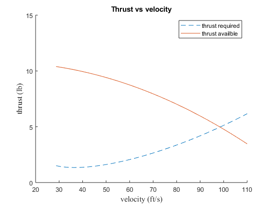
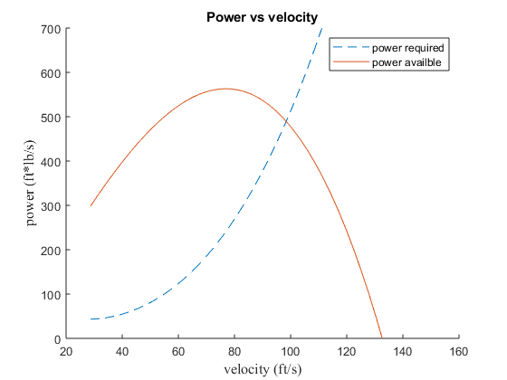
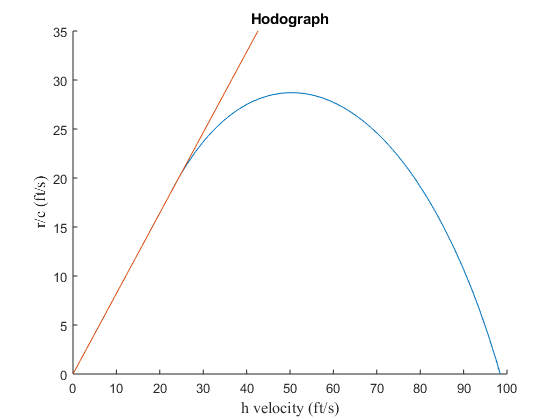
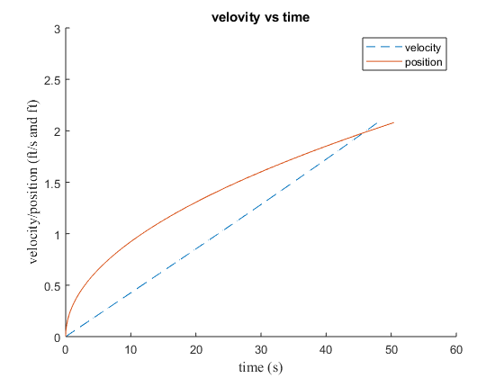
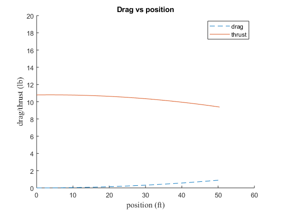

clc
clear all
close all
wt = 14;
wingspan = 110/12;
wingcord = 13.8/12;
liftslopeAF = .115;
liftslopeFW = .084;
CL = 1.4;
Mr = .05;
cdo = .012;
ZLiftAoA = -4.0;
ag = 2.0;
wingHeight = 1;
ar = wingspan/wingcord;
s = wingspan*wingcord
rho = .0023;
ObsHeight = 35;
gravity = 32.2;
c_0 = 10.79;
c_1 = .00489;
c_2 = -.00065;
T = @(V) c_0 + c_1*V + c_2*V^2;
d_0 = -.0002;
d_1 = .00036;
D_ft = @(V) d_0*V + d_1*V^2;
phi = (16*wingHeight/wingspan)^2/(1+(16*wingHeight/wingspan)^2);
q= 1/2*rho
maxcl = @(a) liftslopeFW*(a-ZLiftAoA);
stall = sqrt(2*wt/(rho*s*CL))
Lift = @(V,a) 1/2*rho*V^2*wingspan*wingcord*maxcl(a);
e = (57.3*liftslopeAF)/(((liftslopeAF/liftslopeFW)-1)*pi*ar);
cd = @(a) cdo + phi*maxcl(a)^2/pi/e/(wingspan^2/wingcord);
Drag = @(V,a) D_ft(V)/2*rho*V^2*cd(a);
t0= 0;
x0= 0;
v0= 0;
n1= 1;
xspace(n1) = v0;
tspace(n1) = t0;
vspace(n1) = x0;
dt = .005;
maxiter = 10/dt;
while Lift(vspace(n1),ag)<wt && n1<maxiter
k1 = gravity/wt*(T(vspace(n1)-Drag(vspace(n1),ag)-Mr*(wt-Lift(vspace(n1),ag))));
k2 = gravity/wt*(T(vspace(n1)+.5*k1*dt)-Drag(vspace(n1)+.5*k1*dt,ag)-Mr*(wt-Lift(vspace(n1)+.5*k1*dt,ag)));
k3 = gravity/wt*(T(vspace(n1)+.5*k2*dt)-Drag(vspace(n1)+.5*k2*dt,ag)-Mr*(wt-Lift(vspace(n1)+.5*k2*dt,ag)));
k4 = gravity/wt*(T(vspace(n1)+k3*dt)-Drag(vspace(n1)+k3*dt,ag)-Mr*(wt-Lift(vspace(n1)+k3*dt,ag)));
vspace(n1+1)=vspace(n1)+1/6*(k1+2*k2+2*k3+k4)*dt;
xspace(n1+1)=xspace(n1)+vspace(n1)*dt+1/2*k1*dt*dt;
tspace(n1+1) = tspace(n1)+dt;
n1= n1+1;
end
f1 = figure();
hold on
Tr = @(V)q*s*cdo*V^2+ wt^2/(q*s*pi*e*ar*V^2) + D_ft(V);
fplot(Tr, [stall 110],'--');
ylim ([0 15]);
fplot (T, [stall 110]);
title('Thrust vs velocity');
legend ('thrust required','thrust availble','Location', 'NorthEast');
xlabel('velocity (ft/s)','FontName','Times New Roman','FontSize',12);
ylabel('thrust (lb)','FontName','Times New Roman','FontSize',12)
hold off
saveas(f1,'Thrust vs velocity','pdf');
f2 = figure();
hold on
Pr = @(V)Tr(V)*V;
fplot(Pr, [stall 150],'--');
ylim ([0 700]);
Pa = @(V) T(V)*V;
fplot (Pa, [stall 150]);
title('Power vs velocity');
legend ('power required','power availble','Location', 'NorthEast');
xlabel('velocity (ft/s)','FontName','Times New Roman','FontSize',12);
ylabel('power (ft*lb/s)','FontName','Times New Roman','FontSize',12)
hold off
saveas(f2,'power vs velocity','pdf');
f3 = figure();
hold on
ylim ([0 35]);
xlim ([0 100]);
rc = @(V) (Pa(V)-Pr(V))/wt;
hv = @(V) sqrt(V^2-rc(V)^2);
fplot (hv,rc, [stall 130]);
m = 0.8214;
g = @(V) m*(V);
fplot(g, [0 60]);
for i=2:130
Theta(i) = asin(rc(i)/i);
disp(Theta(i))
if Theta(i)>Theta(i-1)
Theta_max = Theta(i);
end
end
disp(Theta_max)
title('Hodograph');
xlabel('h velocity (ft/s)','FontName','Times New Roman','FontSize',12);
ylabel('r/c (ft/s)','FontName','Times New Roman','FontSize',12)
hold off
saveas(f3,'hodograph','pdf');
f4 = figure();
hold on
ylim ([0 3]);
xlim ([0 60]);
plot (vspace, tspace,'--');
plot (xspace,tspace)
title('velovity vs time');
xlabel('time (s)','FontName','Times New Roman','FontSize',12);
ylabel('velocity/position (ft/s and ft)','FontName','Times New Roman','FontSize',12);
legend ('velocity','position','Location', 'NorthEast');
hold off
saveas(f4,'velocity vs time','pdf');
f5 = figure();
hold on
ylim ([0 20]);
xlim ([0 60]);
fplot (D_ft, [0 xspace(n1)],'--');
fplot (T, [0 xspace(n1)]);
title('Drag vs position');
legend ('drag ','thrust ','Location', 'NorthEast');
xlabel('position (ft)','FontName','Times New Roman','FontSize',12);
ylabel('drag/thrust (lb)','FontName','Times New Roman','FontSize',12)
hold off
saveas(f5,'Drag vs position','pdf');
s =
10.5417
q =
0.0011
stall =
28.7208
Warning: Function behaves unexpectedly on array inputs. To improve performance,
properly vectorize your function to return an output with the same size and
shape as the input arguments.
Warning: Function behaves unexpectedly on array inputs. To improve performance,
properly vectorize your function to return an output with the same size and
shape as the input arguments.
Warning: Function behaves unexpectedly on array inputs. To improve performance,
properly vectorize your function to return an output with the same size and
shape as the input arguments.
Warning: Function behaves unexpectedly on array inputs. To improve performance,
properly vectorize your function to return an output with the same size and
shape as the input arguments.
Warning: Function behaves unexpectedly on array inputs. To improve performance,
properly vectorize your function to return an output with the same size and
shape as the input arguments.
Warning: Function behaves unexpectedly on array inputs. To improve performance,
properly vectorize your function to return an output with the same size and
shape as the input arguments.
-1.5708 + 3.4263i
-1.5708 + 2.5457i
-1.5708 + 1.8542i
-1.5708 + 1.2039i
-1.5708 + 0.2304i
-0.5832
-0.2447
-0.0312
0.1196
0.2323
0.3195
0.3885
0.4441
0.4895
0.5268
0.5577
0.5834
0.6049
0.6228
0.6376
0.6499
0.6600
0.6683
0.6748
0.6799
0.6837
0.6863
0.6879
0.6886
0.6885
0.6876
0.6860
0.6838
0.6810
0.6776
0.6738
0.6695
0.6647
0.6596
0.6541
0.6482
0.6420
0.6354
0.6286
0.6215
0.6141
0.6064
0.5985
0.5904
0.5820
0.5734
0.5647
0.5557
0.5465
0.5371
0.5275
0.5178
0.5078
0.4977
0.4875
0.4771
0.4665
0.4557
0.4449
0.4338
0.4226
0.4113
0.3998
0.3882
0.3765
0.3646
0.3526
0.3404
0.3281
0.3156
0.3031
0.2904
0.2775
0.2646
0.2514
0.2382
0.2248
0.2113
0.1976
0.1838
0.1699
0.1558
0.1416
0.1273
0.1128
0.0981
0.0833
0.0684
0.0532
0.0380
0.0225
0.0070
-0.0088
-0.0247
-0.0408
-0.0571
-0.0736
-0.0903
-0.1071
-0.1242
-0.1414
-0.1589
-0.1766
-0.1945
-0.2127
-0.2311
-0.2497
-0.2686
-0.2878
-0.3073
-0.3271
-0.3472
-0.3676
-0.3883
-0.4094
-0.4309
-0.4528
-0.4751
-0.4979
-0.5211
-0.5449
-0.5692
-0.5940
-0.6196
0.6886
Warning: Function behaves unexpectedly on array inputs. To improve performance,
properly vectorize your function to return an output with the same size and
shape as the input arguments.
Warning: Function behaves unexpectedly on array inputs. To improve performance,
properly vectorize your function to return an output with the same size and
shape as the input arguments.
    